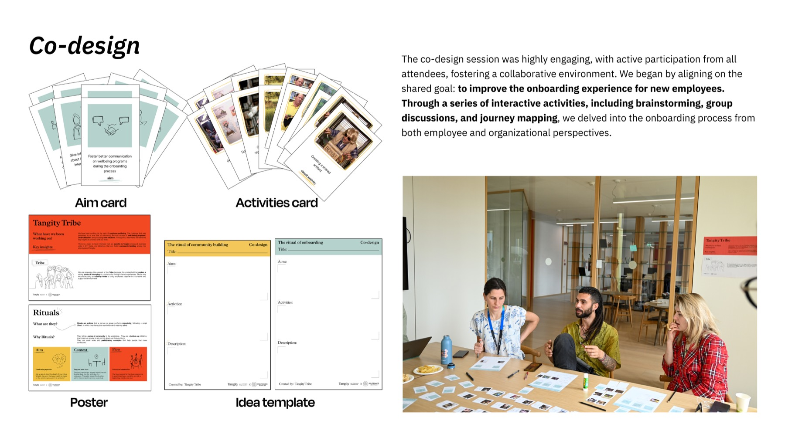
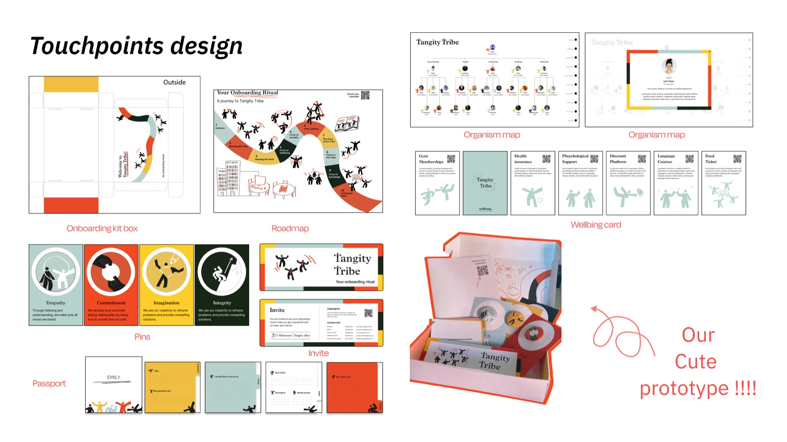
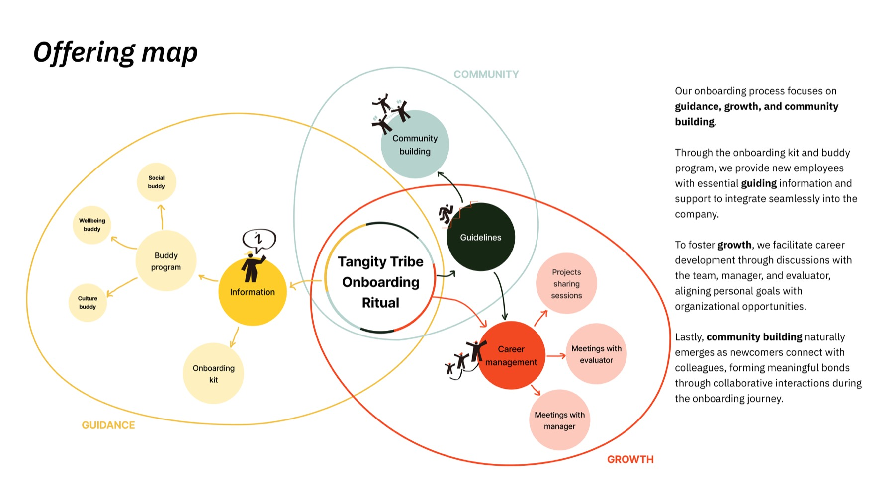

用明确节奏减少第一周的信息与角色不确定。


Archive
Onboarding is not
one welcome moment.
项目把入职问题从“信息是否完整”转向“关系如何逐步建立”：清晰指引固然重要，但归属感来自新员工在时间里不断遇见人、获得支持并参与团队。
团队以 Tribe 作为组织隐喻，通过共创把一个月旅程拆成连续的仪式与触点。这个 archive note 只保留该结构判断，不再展示所有学生式过程材料。
Journey logic
把“欢迎”从一次活动，
变成一段可被支持的旅程。
触点的作用不是制造更多物料，而是在入职早期安排清晰的关系节点：认识团队、找到帮助、参与协作，并回看自己是否真正进入社群。
把导师、团队和同伴关系放进具体参与动作。
让新员工逐渐从被接待者变成社群参与者。

Retrospective
The useful artifact
is the rhythm, not the kit.
What remains useful
用共创识别不同角色可提供的支持，再把抽象的“归属感”转成一组有时间顺序的关系节点。
What is not proven
原型提出了一套入职框架，但没有持续部署后的留任、幸福感或跨团队连接数据，因此不把预期影响写成已实现结果。